All the machines in the lab have Maya installed, if you need Maya on your own machine follow this installation guide.
It is essential that you have a mouse.
If you get stuck or have any questions please ask for help.
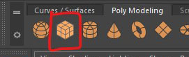
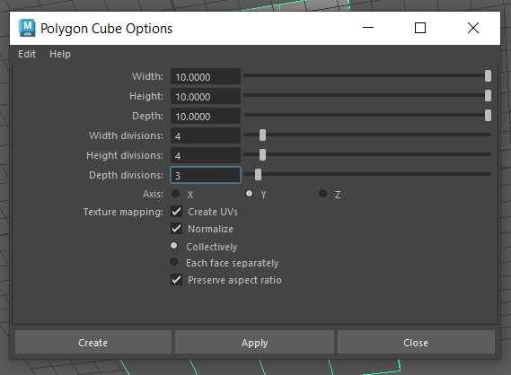
In the last worksheet we manipulating whole objects. However, each polygon is made of different components that we can manipulate individually to give us more control.
These are the Faces, Edges and Vertices.
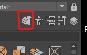
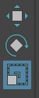
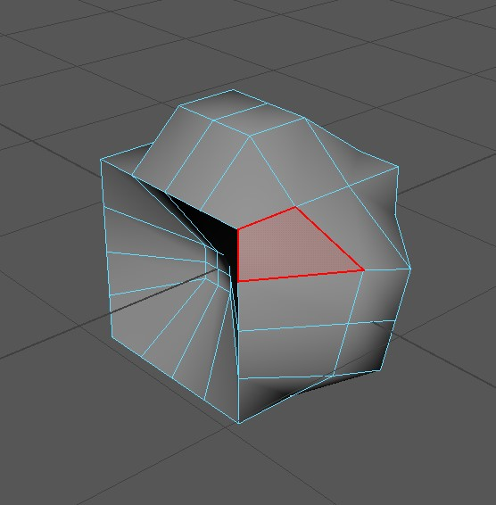
Now try to do the same thing with the vertices.
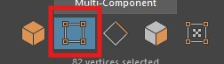
Lastly, switch to edge selection.
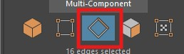
You can go back to selecting the whole object by clicking on the left button.

Another way to access the vertices, edges and faces is to hold down the Right mouse button over the object and then let go over the option you want.

For the rest of this worksheet we will create a very simple character using the box modeling technique, starting with a simple shape we will extrude out details.
This technique has many benefits over just combining primitive objects as we did in the last worksheet. With practice it is fast and allows you to create complex, clean models.
We will create one side of a character, and then mirror it.
It will create a cube with the same parameters as the one you created earlier.
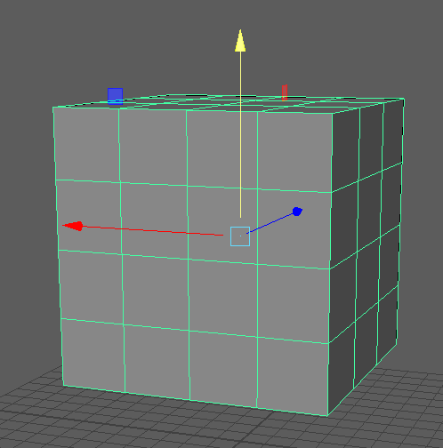
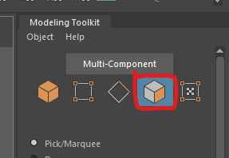
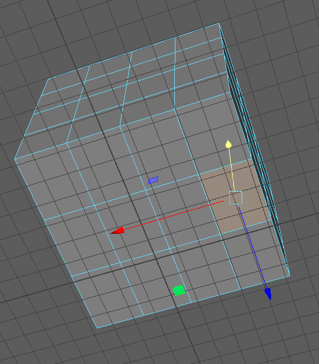
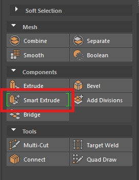
WARNING!: Even though you can't see it your face will have extruded with a depth of 0 as soon as you press this button, if you change your mind, undo to remove this hidden extrusion.
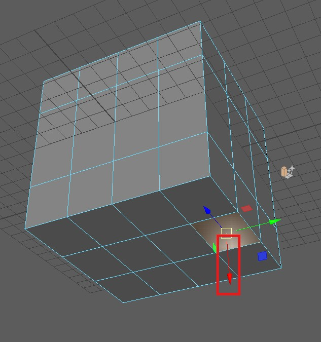
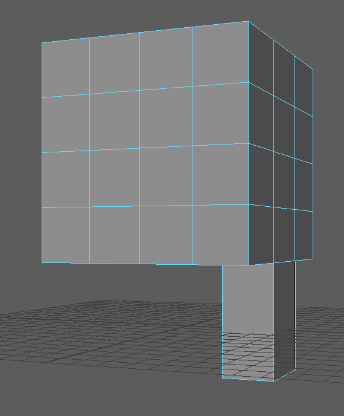
Press q to quit out of the extrude tool when you have finished.
To learn more about selecting, extrusion and other useful tools see the extra videos section in learning materials on Blackboard (Learning materials > Workshops > Extra videos)
Next we are going to add some more edges so that we can create a foot.

You can use this tool to add individual edges, but we are going to add a complete edge loop.

We can now extrude the foot from the leg.
Select the face at the bottom of the leg and extrude it out as we did before.
Remember to press q when you have finished to stop extruding.
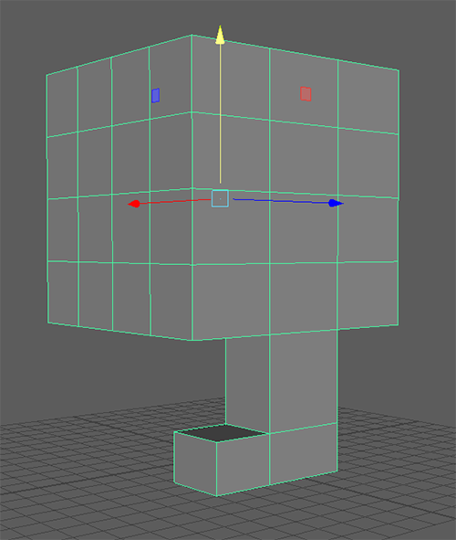
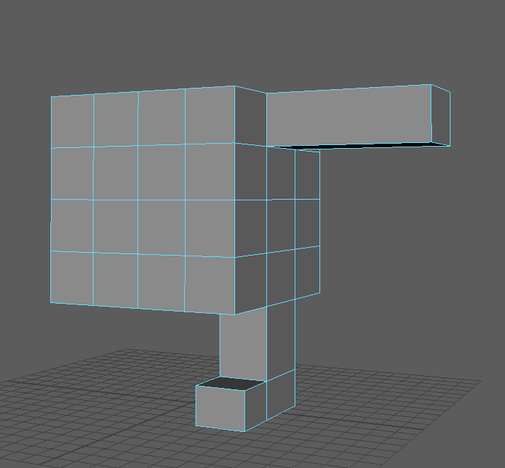
We are currently looking through the perspective camera which gives us a 3D view of the character, but we can also use the orthographic views to make selecting multiple components easier.
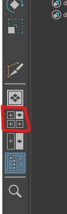
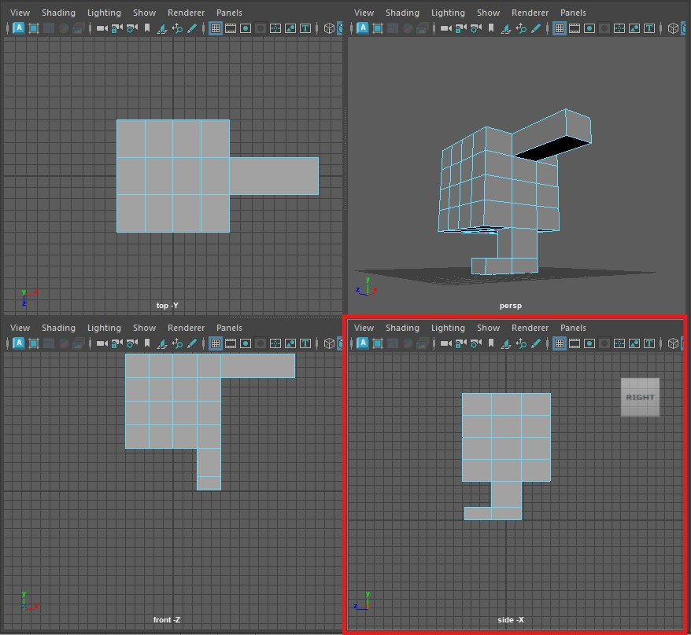
We can now manipulate some of the vertices and edges to improve the shape.
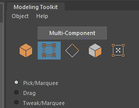
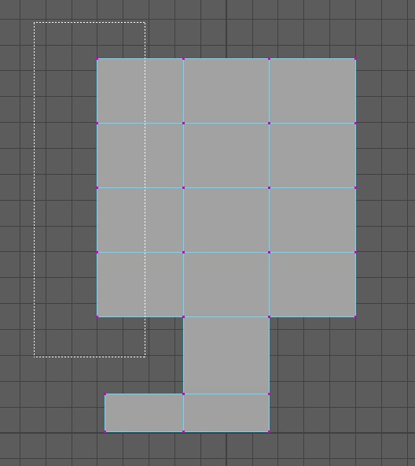
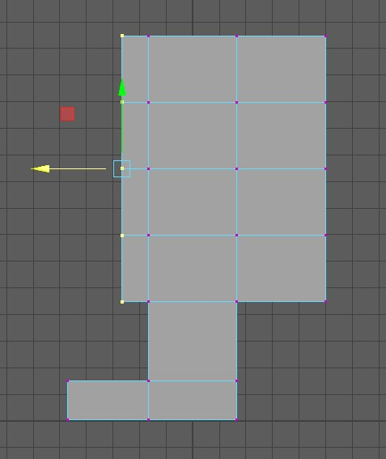
Do the same thing for the back of the character.
You can now go back into the perspective view by pressing the button on the left. ( or tapping the space bar and again over the persp panel)
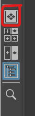
We can manipulate the shape further by moving some of the edges.
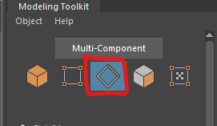
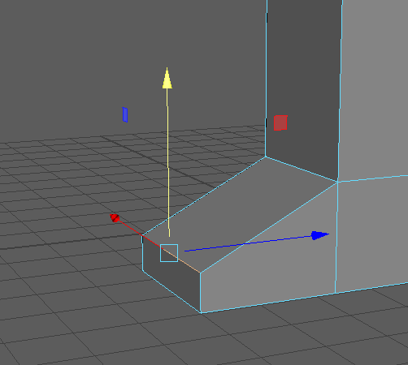
We can clearly spend a lot of time adding more edges and manipulating them to get an increasingly complex shape but for this tutorial we will stop here.
Now that we have finished one half of our character we will mirror it.
First we are going to delete half our model.
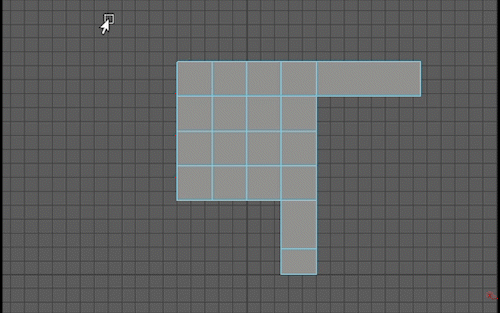
You should now have half a character
Note the small indicator in the bottom left of the panel. In the next step we will mirror in the x direction.
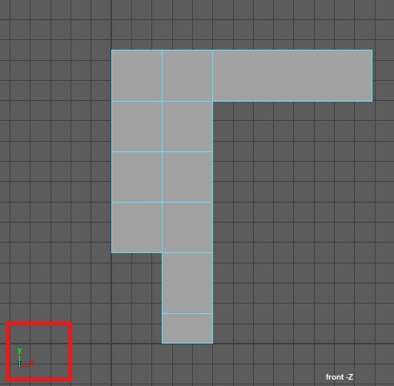
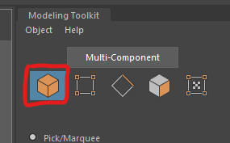
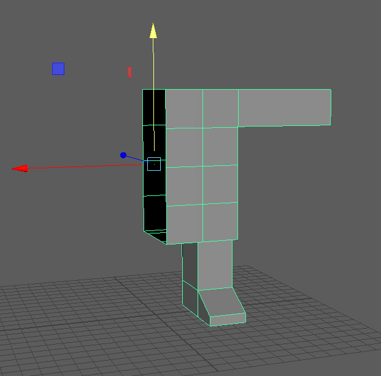
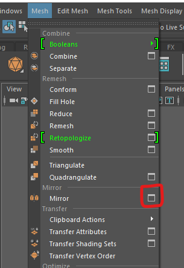
We created our character in the centre of the grid at the origin so we can use the World mirror axis position.
Earlier, the corner indicator showed that I needed to mirror in the x direction.
We want to combine the mirrored object with the original so we finish with one combined shape.
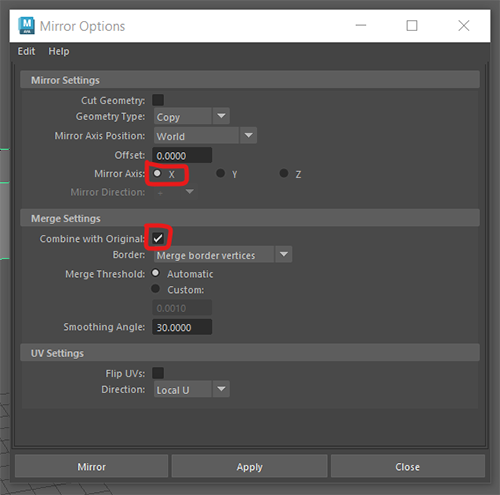
You should now have a complete character body.
If your mirroring has not worked, press undo and try to mirror again.
Next we want to add a head.
We could extrude the neck and head out from the torso just as we did the legs and arms, but, we want to add a circular head that we can move separately from the body.
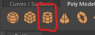
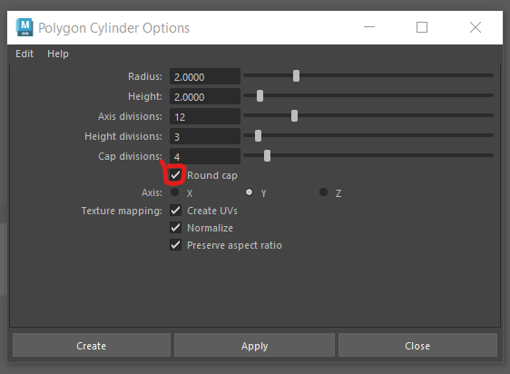
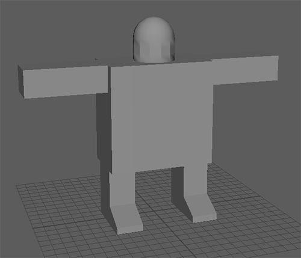
Edges in Maya can be soft or hard. Soft edges are good for rounded shapes, and hard edges are good for sharp corners.
Most polygons will have a combination of the two.
The head of our character has some hard edges we do not want.
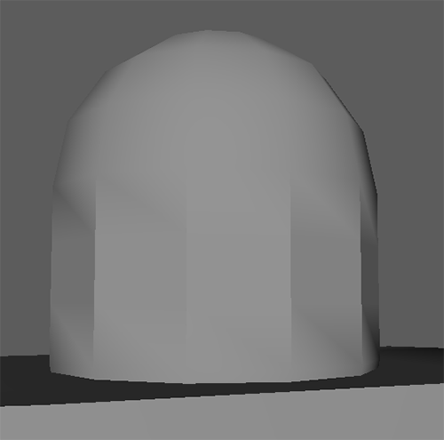
We want to soften all the edges on the head so first select the entire head. You can select individual edges if you need to.
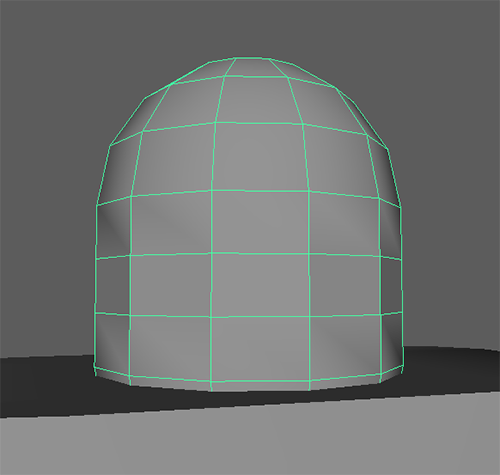
Then go to Mesh Display > Soften Edge
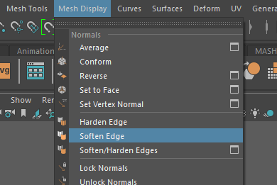
Your head should now look like this.
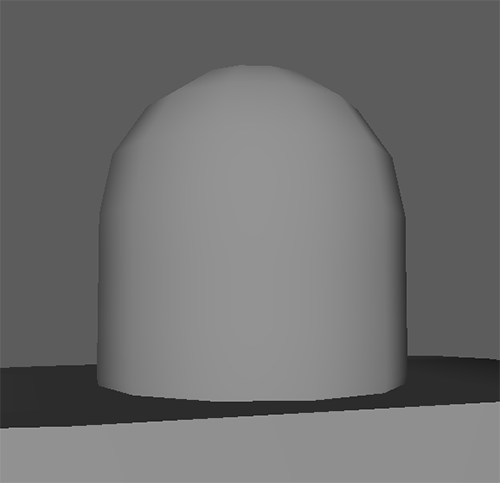
Deleting unneeded faces and edges is the easiest way to reduce you triangle count.
If you select the head you can see it has 240 triangles.
Our head currently has more triangles than it needs.
we cannot delete the edges on the top as this will effect the overall shape, but we can delete some of the edges from the middle.


IMPORTANT - If you only press delete or backspace Maya will leave behind the vertices, which wont reduce your triangle count.
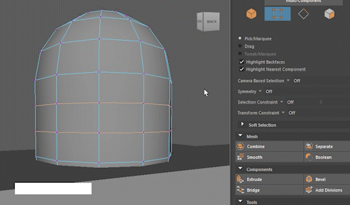
The head should now have 192 triangles.
Another way to reduce you triangle count is to delete hidden faces.
I would recomend you do not do this until the very end. but we can do it on our character now.
Hide the body by selecting it in the outliner and pressing h
Select the faces on the bottom of the head

Press delete
Select the body in the outliner again and press h to show it.
Without effecting how the head looks we have substantially reduced the number of triangles.
To get more practice, try to add some more detail to the character.
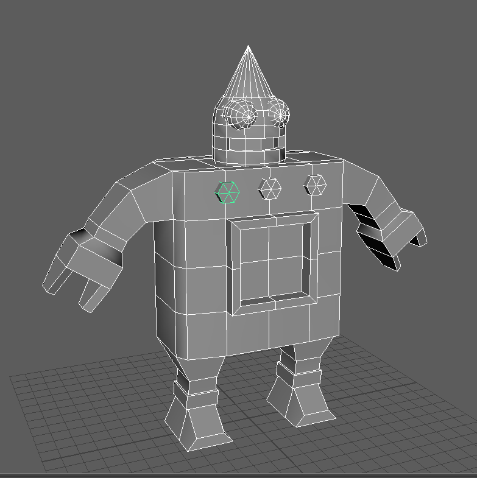